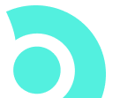

Design que ecoa.
O sistema dos dois sites da Echo Hub: a home do Echo Connect e a página do Echo Staff. Branco como página, seções pretas, lettering vazado como assinatura, turquesa como luz. Regras completas e contexto no arquivo ECHO-DESIGN-SYSTEM-E-CONTEXTO.md. Componentes refinados com Origin UI, Neo Raised, Phosphor Regular e Iconoir.
Branco, preto e um turquesa.
Neutros fazem a página; o turquesa é acento e luz. Nunca fundo grande no claro, só em pílulas, cartões de destaque e no botão principal. Preto da marca é #0A0A0A, nunca #000.
Proporção na página
Cerca de 60% fundo claro, 28% cartões brancos, 9% preto (seções e ícones) e 3% turquesa (acentos, botão, linhas e luz).
Opacidades do turquesa
Superfícies, auras, faixa do funil.
Foco, halo, anel em volta do centro.
Só em linhas, pontos e traços.
Letras que falam e ecoam.
Bricolage Grotesque nos títulos, Inter no texto, Inter 650 com contorno externo no lettering vazado. As fontes desta pasta são auto-hospedadas em fonts/.
Regras
Lettering vazado
Só em 48 px ou mais. Traço de 1,2 a 1,6 px. Uma parte do título, nunca o título todo.
Tracking
Títulos de −.04em a −.05em. Nunca abaixo de −.05em. Corpo sem tracking.
Mono
JetBrains Mono só para dado técnico e código, nunca como enfeite de rótulo.
Peças que se repetem.
As mesmas nos dois sites. Botões inspirados em Origin UI, profundidade tátil pontual do Neo Raised e iconografia Phosphor Regular + Iconoir. Seletor sempre com >.


Apenas o símbolo no favicon, aplicativos e marca reduzida. Não redesenhar nem substituir por ícone de biblioteca.
Botões · Origin UI + Neo Raised
Base · interface e conversãoRegras: altura 48px; texto Inter 600/14px; raio 12px; fundo sólido ou outline. Sem glow, bounce ou preenchimento circular. CTA principal preto ou turquesa conforme a cena; terciário discreto.
Exceção tátil · ButtonCraft Neo RaisedNeo Raised só em superfícies claras acinzentadas, como ações de módulos, ferramentas e experiências interativas. Sombra dupla suave e clique com profundidade inset. Evitar em todos os CTAs, em fundos escuros ou muito próximos.
CabeçalhoLogo escuro sobre claro; trocar para o branco nas cenas pretas. Abaixo de 400 px a pílula mostra apenas “Diagnóstico”.
Iconografia · duas bibliotecas
Phosphor Regular é o padrão para navegação, ações, indicadores, conteúdo e botões (20 a 24px). Iconoir é biblioteca de apoio apenas quando oferecer uma representação mais clara ou uma solução específica inexistente no Phosphor. Não misturar famílias dentro do mesmo componente ou grupo. Manter ícones soltos, sem caixas pretas como regra, e usar somente o peso Regular do Phosphor.
Phosphor Regular · padrão principalEste documento carrega as folhas CSS das duas bibliotecas por CDN, exclusivamente no peso Regular do Phosphor. Em produção, priorizar SVGs individuais dos ícones utilizados para reduzir o peso e preservar a consistência visual.
Selos, chips e cartõesObrigatório em toda simulação.
O Echo Staff é uma consultoria?
O Echo Staff constrói e entrega. Além de mostrar o caminho, a Echo coloca pessoas especializadas para fazer junto com o seu time.
A Echo faz a prospecção por mim?
Não. Quem aborda, conduz e vende é o seu time.
Padrões dos dois sites.
Cada bloco tem um momento autoral. Os diagramas vêm das propostas em HTML e são refeitos como componentes leves. Role até cada um para ver a animação.
Triângulo do ciclo
Pessoas puxam processo, processo puxa demanda, demanda ruim queima o time. As setas se desenham uma a uma; o laço vermelho aparece por último.
staff.css · .st-tri--cycle
O gasto em degraus
Quatro etapas acendem uma por segundo e o gasto sobe um degrau a cada uma. A estrutura rodando fica no zero. Sem valores em reais.
staff.css · .st-cs__chart
Estrutura rodando na sua operação: zero
Joias e varredura
Uma faixa turquesa varre o campo e acende as poucas joias. A varredura anda por transform; o brilho é opacidade de um pseudo-elemento.
staff.css · .st-joias__field
Funil das seis etapas
Muitos candidatos afunilam até Perfil A, B e C. Palco proporcional (cqw), escala como slide. Embaixo só os nomes das etapas.
staff.css · .st-tf__stage
Funil em Y
Inbound e outbound se desenham e entram no mesmo tronco; a indicação entra perto da reunião; pontos correm até a receita. No celular, só o desenho e as frentes em lista.
staff.css · .st-py
Hoje × Com a Echo
Botão que troca o retrato da operação; vira sozinho quando aparece. Substituiu a linha do tempo por mês (sem datas na página).
staff.css · .st-jn__sw
Mapa de padrões por site
| Padrão | Home (Echo Connect) | Echo Staff |
|---|---|---|
| Topo | "Pare de montar lista." + "echo" vazado sob a luz do cursor + faixa que corre | "Sua estrutura comercial, construída dentro da sua empresa." + "staff" vazado |
| Dores | 3 dores fixas, seção fixa, uma por vez | Mesmo componente, dores de pessoas, processo e demanda |
| Prova do produto | Cena do processo, galeria horizontal (validação, planilha, CRM) | Triângulo, máquina das três pontas, Talent, Process, Connect, plataforma |
| Custo | CostRise: pilha "Custo ↑", sem R$; conexão 10–15% × 35–50% | Consultoria: gasto em degraus, estrutura no zero |
| Como funciona | Ciclo de 4 etapas (celular: cartões) | Ritmo semanal, Hoje × Com a Echo, um dia na operação |
| Estrutura | Seções com rolagem, cenas fixas | 15 slides com encaixe suave e parallax no Talent |
| Fecho | Chamada final preta + logos em loop, FAQ, frase final vazada correndo | |
Movimento com intenção.
Um momento autoral por bloco. Desaceleração --ease-out (0.22, 1, 0.36, 1). Conteúdo visível por padrão; animação só com a classe motion e o bloco em .is-in.
Retorno de clique e hover.
Mudança de estado (botão, toggle).
Transição e entrada de destaque.
Só em diagramas: um passo por segundo.
Cenas, slides e parallax
Troca de cena
Cada seção tem data-scene. A cor da página faz a transição suave (0,7 s) quando a seção passa do meio da tela. É o que deixa o site "vivo".
Slide com encaixe
No computador (≥ 901 × 640), cada slide tem a altura da tela. Se a rolagem para perto do começo de um slide (menos de 18% da tela), a página desliza até ele em 0,6 s. Nunca no meio do movimento.
Entrada e parallax
O conteúdo ganha opacidade e escala (0,96 a 1) perto do centro. Camadas com data-depth andam em velocidades diferentes; "talent" gigante fixo ao fundo desliza de lado.
Reduzir movimento
- Sem fixações, sem encaixe, sem animação contínua: tudo aparece no estado final.
- Controles (pesos do relatório, Hoje × Com a Echo) continuam funcionando.
Leve como a home.
Requisito, não detalhe: o Jorge sente "travado" com facilidade. Toda página nova tem custo de rolagem medido contra a home.
- Calcular efeitos de rolagem só no evento de rolagem do Lenis e só nos blocos perto da tela.
- Escrever transform, opacity e translate direto no elemento.
- Animar só transform e opacity; brilho e pulso por opacidade de pseudo-elemento.
- Pausar animações contínuas fora da tela (.is-live, svg.pauseAnimations()).
- will-change só no que está animando agora.
- Fontes auto-hospedadas com preload; imagens com tamanho, lazy e async.
- Laço por quadro rodando com a página parada.
- Variável CSS herdada atualizada a cada quadro (recalcula cada filho).
- filter: blur animado em blocos grandes.
- Animar box-shadow, background, left, top, width ou height.
- Parallax por translate em elemento centralizado com translate: -50%.
- Encaixe de rolagem que puxa no meio do movimento.
O celular é um site próprio.
Não é o computador espremido. Verificar de 320 a 1920 px sem rolagem horizontal. Ao melhorar o celular, o computador não muda (comparação pixel a pixel).
Celular
Layout próprio, botões na largura toda, cabeçalho com fundo ao rolar.
Tablet
Colunas viram uma; sem slides nem encaixe.
Ajustes
Grades de 6 viram 3; relatório empilha.
Slides
Encaixe, entrada, parallax e "talent" ao fundo.
Adaptações já feitas
- Gráfico de custo inteiro, com ícones e legenda, nunca quebrado em 2×2.
- Quatro etapas em cartões ligados por um fio turquesa; CRM em 3 colunas.
- Funil em Y simplificado com as frentes em lista; canais em cima, centro e agenda embaixo.
- Relatório empilhado com botões de peso maiores; linha do dia vertical.
- Grades com minmax(0, 1fr); .container com width: 100% dentro de flex em coluna.